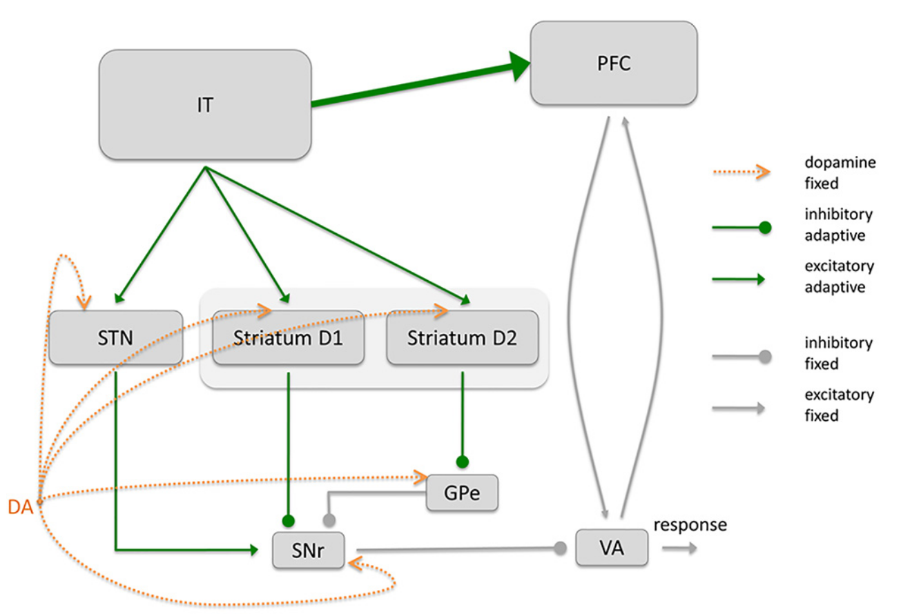
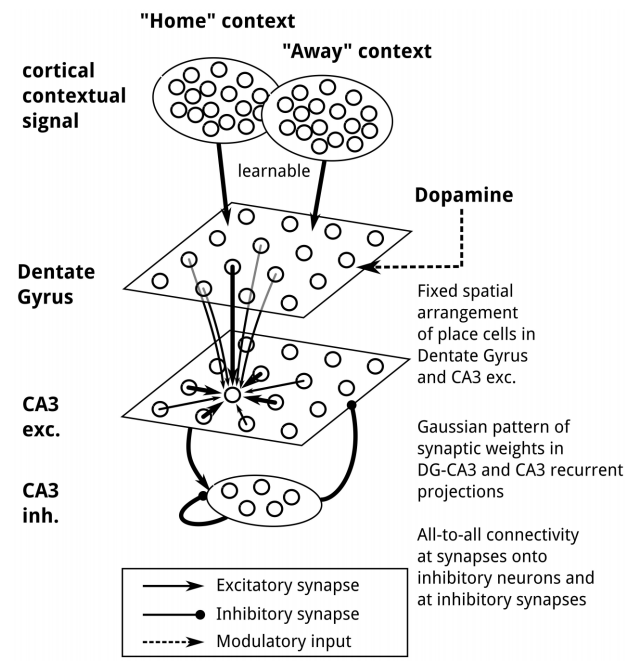

Research
Computational neuroscience
Basal Ganglia
The Basal Ganglia (BG) are a set of nuclei located in the basal forebrain, receiving inputs mostly from the cerebral cortex and projecting to various motor centers, as well as back to the cortex through the thalamus, forming a closed-loop. It is involved in major functions such as reinforcement learning, habit formation, planning and motor control, but also in diseases such as Parkinson’s disease or Tourette syndrome.

Dopaminergic system
The dopaminergic system is composed of the ventral tegmental area (VTA) and the substantia nigra pars compacta (SNc). The neurotransmitter dopamine (DA) released by neurons in these two small areas exerts a strong influence on neural excitability and plasticity in many brain areas: mostly the basal ganglia (BG), but also the prefrontal cortex, the hippocampus or the amygdala.

Hippocampus
The hippocampus is a key structure for episodic memory and spatial navigation. A fundamental step in hippocampus research was the discovery of place cells, which fire whenever an animal traverses a certain location known as the place field (O’Keefe and Nadel, 1978). At rest, place cells exhibit brief periods of fast oscillations termed sharp wave-ripples. During these events, place cell activity shows sequential patterns called forward replay and reverse replay: time-compressed, and sometimes time-reversed, reproductions of previously experienced sequences. Spatial experiences stored in the hippocampus can therefore be recalled at will during behavior.

Neuroinformatics
Neurosimulator ANNarchy
I develop with Helge Dinkelbach ANNarchy (Artificial Neural Networks architect), a parallel simulator for distributed rate-coded or spiking neural networks. The definition of the models is in Python, but the library generates optimized C++ code to actually run the simulation on parallel hardware, using either openMP or CUDA.
Neurocomputing
Reservoir computing
Reservoir computing studies the dynamical properties of recurrently connected populations of neurons. Their rich dynamics allow to represent and learn complex tasks currently out of reach of the classical machine learning methods, but also allow to better understand brain activities.

Reinforcement learning
Reinforcement Learning (RL) is a machine learning framework studying how to derive optimal policies from reward signals. Coupled with deep neural networks, it became the most promising approach to artificial intelligence.